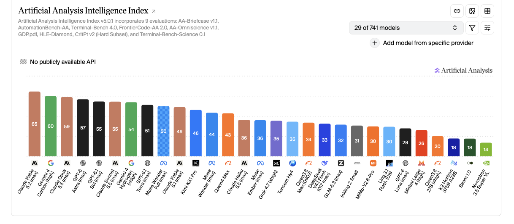

사진: NASA Johnson Space Center · Public domain (Wikimedia Commons)
2026.11.16 기준
Weekly Tech · AI Briefing
2026년 11월 셋째 주 테크·AI 브리핑
이번 주 가장 큰 두 사건은 Anthropic IPO와 AI 시험 부정행위. 여기에 MS365 장애, Gemini 4, 소형 모델, Claude Projects, ChatGPT Wallet까지.
AI 시험 부정행위MS365 장애Gemini 4소형 모델 3종Claude ProjectsChatGPT WalletAnthropic IPO
Contents
이번 주 일곱 가지
01
AI 시험 부정행위
세무사 수석 자백 · 정부 대응 · 수능 대책 · Monorean Pro
02
MS365 장애
Exchange발 전 세계 장애 · 복구 타임라인 · 원인 · 관리자 체크와 SLA 크레딧
03
Gemini 4
Argon · Carbon · Hydrogen 비교와 Krypton · Helix 유출
04
소형 모델 3종
Muse Ember · Claude Haiku 5.5 · GPT-6 Luna
05
Claude Projects
능동형 코디네이터와 병렬 스레드
06
ChatGPT Wallet
에이전트 결제 · 결제 토큰 · 건별 생체 인증
07
Anthropic IPO
공모 조건 · S-1 재무 · 위험 요인 · SpaceX 비교
!
주의사항
기준일 · 벤더 수치 · 1차 출처 미확인 항목
확정된 사실루머·미확인판단벤더 수치
AIArtificial Intelligence · 인공지능MS365Microsoft 365 · Word·Excel·Teams 등을 묶은 Microsoft 구독 서비스S-1Form S-1 · 미국 상장 때 증권거래위원회(SEC)에 내는 증권신고서IPOInitial Public Offering · 기업공개. 주식시장 첫 상장
01
AI 시험 부정행위
세무사 수석 합격자의 자백, 그리고 사흘 앞으로 다가온 수능
배경: 고려 · CC BY 4.0 · 2018학년도 수능 컴퓨터용 사인펜과 샤프 / 우측: Mister rf · CC BY-SA 4.0 · 열화상 이미지 (Wikimedia Commons)
01 · AI 시험 부정행위
세무사 수석의 성적, 그리고 감독 실패
제63회 세무사 시험 · 수석 합격자 (34세)
1차
0/ 400
2차
0/ 800
1차: 재정학 한 문제만 틀림 · 세법학개론·회계학개론·상법 만점
세법학개론 응시자 평균약 30
수석 합격자100
→ 온라인에서 AI 스마트안경 사용 의혹 제기 · 평균은 SBS 보도
감독 실패
교단
2차1차
1차 4월 · 2차 7월
1차 둘째 줄 중앙, 2차 첫째 줄 중앙
시험실마다 감독위원 2명
그런데도 적발하지 못했고, 시행 기관인 한국산업인력공단은 자백 직전까지 “특이사항 없음”
좌석 배치도는 위치를 보여 주기 위한 예시 · 자료: 헤럴드경제, SBS, 파이낸셜뉴스, 뉴시스
AIArtificial Intelligence · 인공지능SBSSeoul Broadcasting System · 국내 지상파 방송사
01 · AI 시험 부정행위
“공부를 왜 할까요”에서 자백까지 나흘
11.11 · 부인
한국경제와 약 34분 통화
“AI 안경으로 이걸 맞힐 수 있으면 공부를 왜 할까요”
11.15 · 자백
법률대리인 유튜브 출연
“초소형 카메라로 시험 문제를 찍고 AI로 전송해 스마트폰으로 답을 확인”
자백
11.15 · 자수
서울경찰청 자수서 접수 → 광역수사단 배당
이후
공단: 사과문 · 업무방해 고소 정부: 시험 무효 · 합격 취소 · 5년 응시 제한 · 고발
본인 진술 vs 확인
세무사 1·2차 모두, 공인회계사 1차도 같은 방식이라고 밝힘 → 금감원: 공인회계사 1차는 불합격. 구체적 수법은 모방 방지를 이유로 비공개
적용 가능한 처벌
세무사법 §5의3: 시험 무효 + 5년 응시 정지 형법 §314 업무방해: 5년 이하 징역 또는 1,500만 원 이하 벌금 공인회계사법: 불합격자도 5년 응시 불가
→ 금속탐지 · 생체인식 본인 확인 · 사후 성적 이상치 검증을 함께. 경찰도 TOPIK 사건 뒤 금속탐지기·생체인식 도입 요청
BTBluetooth · 블루투스. 몇 미터 안에서 기기끼리 잇는 근거리 무선 통신TOPIKTest of Proficiency in Korean · 한국어능력시험
02
MS365 장애
11월 12~14일, Exchange Online에서 시작해 Outlook·Teams·Copilot까지 번진 전 세계 장애
배경·우측: BalticServers.com · CC BY-SA 3.0 · 데이터센터 서버 랙 (Wikimedia Commons)
02 · MS365 장애
Exchange에서 시작해 70여 개국으로
Downdetector · Outlook 신고 수 · 11/12 (미국 동부 시간)
이용자 신고 Microsoft 수치 아님 · Microsoft는 영향 계정 수 미공개
72개국 Outlook 신고 43,000건+ (13일 07:00 UTC, Al Jazeera) · 최고치: Reuters 138,058 / CP24 약 14만
장애 번호 · 시작 시각
EX1550543Exchange Online (근원) 12일 16:17 UTC= 13일 01:17 KST 환산
MO1550821여러 서비스 통합 공지 12일 18:26 UTC= 13일 03:26 KST 환산
출처 간 차이 Wikipedia는 17:00~18:00 UTC
멈춘 것 · 된 것 (MO1550821 목록)
✕ 실패·지연
Outlook 메일함 연결메일 전달 지연Teams 일정·예약·초대CopilotDefender XDRPurview · IntunePower BI · FabricGraph API관리 센터 외
✓ 계속 작동
Teams 통화·회의Teams 채팅·채널SharePoint 직접 저장 파일
Exchange 외 18개 서비스(The Register 약 15개) · 개인 계정도
UTCCoordinated Universal Time · 협정 세계시KSTKorea Standard Time · 한국 표준시 = UTC+9ETEastern Time · 미국 동부 시간. 11월은 UTC−5XDRExtended Detection and Response · 보안 위협 탐지·대응 제품군APIApplication Programming Interface · 프로그램이 기능을 불러 쓰는 창구
02 · MS365 장애
복구까지 약 하루, 끝난 시각은 출처마다 다르다
12일 16:17
Exchange 영향 시작 18:26 통합 공지 KST 13일 01:17 환산
12일 19:06
배포·구성 변경 전면 중단 KST 13일 04:06 환산
13일 01:06
최근 네트워크 구성 변경 되돌림 → 대체 헬스체크 · 트래픽 재분산 · VM 추가 KST 10:06 환산
13일 04:36~13:32
지역별 회복 부분 복구 → 유럽 → 북미 · 아시아태평양 KST 13:36~22:32 환산
13일 14:17
메일 대기열 정상 근접 22:00 확장 모니터링 KST 23:17 환산
14일 04:17
serviceRestored KST 14일 13:17 환산
시각은 UTC · KST는 UTC+9 단순 환산
Microsoft 조치
메일 타임아웃을 48시간으로 연장 → 늦게 도착할 뿐 유실되지 않도록
종료 시각 충돌
Microsoft 기록 안에서 04:10 vs 16:10 UTC(13일) · Wikipedia “14일 아침 완전 복구” · 흔히 ‘약 24시간’
별도 사건
12일 14:45~15:53 Teams 장애 TM1550488(리소스 경합). 연관 여부는 미발표
UTCCoordinated Universal Time · 협정 세계시KSTKorea Standard Time · 한국 표준시 = UTC+9VMVirtual Machine · 가상머신. 물리 서버 위에 띄우는 가상 서버
02 · MS365 장애
헬스체크가 서버를 빼고, 남은 서버가 버티지 못했다
①헬스체크 실패 → 서버 이탈②남은 서버의 ‘보안 연결’ 과부하③복귀해도 트래픽 받으면 다시 멈춤④대체 헬스체크 · 트래픽 제한 · 단계적 복귀
Microsoft 예비 설명
“사이버나 AI·에이전트와 무관한 기술적 문제. 앞선 네트워크 용량 업그레이드 중 생긴 문제가 최근 네트워크 변경 뒤 드러났다”
배제
사이버공격 · 징후 없음AI 에이전트트래픽 급증 · DoS
루머·미확인
Azure VNet 구성 변경 (The Verge)
‘결함 있는 서버 업데이트’ (Wikipedia) ↔ Microsoft 설명과 충돌
Patch Tuesday 연관 · DNS·443 주장
PIR: “2영업일 안에 예비 보고서” 예고, 14일 현재 미공개 → 이번 주 초 예상 EpiFive 해석
PIRPost-Incident Report · 장애 사후 보고서DoSDenial of Service · 트래픽을 퍼부어 서비스를 마비시키는 공격VNetVirtual Network · Azure 가상 네트워크DNSDomain Name System · 도메인 이름을 IP 주소로 바꾸는 체계
02 · MS365 장애
관리자가 지금 할 일, 그리고 SLA 크레딧
Microsoft 안내
관리 센터 › 상태 › 서비스 상태에서 EX1550543 · MO1550821 확인
관리 센터가 안 열리면 status.cloud.microsoft
서비스 상태 메일 알림 · Graph serviceAnnouncement 켜기
제3자 권고
메시지 추적으로 지연인지 유실인지 확인, NDR 주시
영향 시간을 UTC로 기록 (SLA 청구용)
‘메일함 복구’ 피싱 주의 — Microsoft는 사용자 조치 없다고 함
포털이 멈춘 시간대 Defender XDR 경보 · 로그인 기록 검토
오류 우회하려고 MFA·조건부 액세스 완화 금지
두 번째 소통 채널 마련
Exchange Online SLA 크레딧 · 11월(720시간) 예시
25%50%100%
07시간 12분99%36시간95%48시간
다운타임24시간
월 가동률96.67%
서비스 크레딧50%
99.9% 선은 약 43분. 다운타임 = OWA로 메일을 주고받을 수 없는 시간 · 자동 지급 아님: 11월분 12/31까지 청구, CSP 고객은 파트너 통해
SLAService Level Agreement · 서비스 수준 계약. 가동률 약속과 미달 시 보상OWAOutlook on the Web · 웹용 OutlookNDRNon-Delivery Report · 반송 알림 메일MFAMulti-Factor Authentication · 다중 인증CSPCloud Solution Provider · Microsoft 재판매 파트너
03
Gemini 4
Argon · Carbon · Hydrogen, 그리고 Krypton · Helix 유출
배경: Google 공식 블로그 「Gemini 4 Argon is now available in the Gemini app」 / 우측: 「Introducing Gemini 4 Hydrogen」
03 · Gemini 4
세 모델이 6주 사이 모두 GA
Argon유료 API · Gemini 앱 AI Pro·Ultra
9/30 발표10/13 GA
Carbon유료 API · AI Ultra · Antigravity 사이버 특화판은 Fairwind 전용
10/28 발표11/10 GA
Hydrogen무료 티어 포함 모든 API · Gemini 앱 · Google 검색
11/12 발표 = 즉시 GA
10/110/1511/111/15
발표 · 제한 공개 (사이버 방어자·Fairwind)GA
Hydrogen 논란 정리
11월 초 “Flash급 루머 모델” 보도 → 11/12 18:00 UTC Google 출시 공지·릴리스 노트, AA도 11/12 출시로 기록 → 정식 출시가 맞음. 단, “단기 GA · 은퇴 45일 전 사전 고지” 조건
GAGeneral Availability · 정식 일반 공개APIApplication Programming Interface · 코드로 모델을 불러 쓰는 창구UTCCoordinated Universal Time · 협정 세계시. 한국 시간 = UTC + 9시간AAArtificial Analysis · AI 모델 성능·가격을 독립 측정하는 업체
03 · Gemini 4
Hydrogen: Argon 수준 점수에 비용·시간은 몇 분의 1
HydrogenArgonCarbon· 자료: Artificial Analysis 스냅샷 · 범위 값은 상단 기준으로 막대 표시
AA Intelligence Index v5.0.1 높을수록 좋음
Hydrogen high51
Hydrogen xhigh54
Argon high50
Carbon high60
AA 과업당 비용 낮을수록 좋음
Hydrogen high$1.87
Hydrogen xhigh$3.16
Argon$4.97
Carbon$5.48
과업당 소요 시간 짧을수록 좋음
Hydrogen high8.3분
Hydrogen xhigh13.5분
Argon30.6분
Carbon28.1분
출력 속도 (AA) 높을수록 좋음
Hydrogen180~198
Argon~63
Carbon61~72
tok/s · 첫 응답 토큰까지(high): H 17~19초 · A 41~44초 · C 63~72초
AAArtificial Analysis · AI 모델 성능·가격을 독립 측정하는 업체tok/stokens per second · 초당 출력 토큰 수high · xhigh추론 강도 설정 · 더 오래 생각하게 할수록 점수와 비용이 함께 오름
03 · Gemini 4
AA 지수 전체 순위: Carbon 2위, Hydrogen 7위

출처: Artificial Analysis Intelligence Index v5.0.1 화면 캡처 · 741개 중 29개 모델 표시 · 강조 표시는 이 문서에서 추가
Gemini 4 Carbon (high)
60 · 표시 모델 중 2위
1위 Claude Fable 5.2 (max) 65 다음
Gemini 4 Hydrogen (xhigh)
54 · 표시 모델 중 7위
Flash급인데 GPT-6.1 Sol·Claude Sonnet 5.5(55)와 1점 차
Argon(high, 50)은 이 화면에 없음 · 실시간 스냅샷이라 순위는 바뀔 수 있음
AAArtificial Analysis · AI 모델 성능·가격을 독립 측정하는 업체max · high · xhigh추론 강도 설정 · 괄호 안 값은 측정에 쓴 설정
03 · Gemini 4
12월 1일, Argon·Carbon 가격 두 배
API 가격 · 100만 토큰당 (입력 / 출력)
Argon
입력$2$4
출력$10$20
Carbon Argon과 동일
입력$2$4
출력$10$20
Hydrogen 전 구간 동일
입력$1.50
출력$7.50
해석 (high 기준)
Hydrogen은 Argon보다 점수 +1, 과업당 비용 약 −62%, 3.7배 빠름 → 텍스트 위주 과업엔 Argon을 쓸 이유가 거의 없음. Carbon은 가장 어려운 디버깅·설계용 상한 모델
벤더 수치 · Carbon 모델 카드
Terminal-Bench 4.0C 65.2 · A 57.1
FrontierSWE 2C 61.2 < GPT-6 Astra 65.5
OSWorld-2.1C 81.5 < Opus 5.5 87.2
GraphWalks 256k~1MC 96.2 · A 84.2
HLE · GPQA · SWE-bench Verified는 미공개
APIApplication Programming Interface · 코드로 모델을 불러 쓰는 창구. 가격은 토큰 단위로 매김256k · 1M토큰 수 · 약 25만 6천 · 100만 토큰 길이의 입력
03 · Gemini Krypton
‘Krypton’: 유출뿐, 확인은 없다루머·미확인
11.08
X @lyraxana
“new internal checkpoint called Krypton… even better than Carbon”
11.09
@chetaslua ‘Krypton-a’ 비교 영상: 같은 프롬프트에 시간·코드 약 2배
“sounds like a BIG model” — @koltregaskes
11.11께
Logan Kilpatrick “Gemini” 한 단어 게시 → 추측 확대
11.13 ~ 14
Arena ‘gemini-4-hydrogen’ 라벨 테스트 주장 → 최다 공유 데모 게시자가 “실은 높은 추론 강도의 Hydrogen”으로 정정
Google 공식 입장
발표 없음모델 ID 없음가격 없음출시일 없음
“Carbon보다 낫다”는 말은 선별된 데모에 근거한 주장일 뿐
신뢰도: 낮음 ~ 중간
낮음중간높음
＋ 원소 이름 체계(Argon → Carbon → Krypton)와 맞고 여러 계정이 언급 － 재현 가능한 점수 없음 · 정정 사례 발생
IDIdentifier · API에서 모델을 부를 때 쓰는 고유 이름X옛 Twitter · 유출 게시물이 올라온 소셜 미디어
03 · Gemini Helix
‘Helix’: Flash-Lite 자리에 거론된 이름루머·미확인
FLASH-LITE · 유출
Helix?
Antigravity 개인 코드에서 목격
FLASH · 11/12 GA
Hydrogen
같은 코드의 Flash 표기, 출시와 일치
상위 · GA
Argon · Carbon
10/13 · 11/10 일반 공개
차기 상한? · 유출
Krypton?
내부 체크포인트 주장
11.10
Google 직원 표기 GitHub 계정의 개인 Antigravity 프로젝트 커밋: Flash-Lite → Gemini 4 Helix, Flash → Hydrogen
직후
X @LuminaBench가 공유
“I can't verify this is true obviously”
이후
저장소가 곧 사라졌다는 주장 · 가격 $0.30 / $2.50(캐시 $0.03)설, 근거 없음
Google 공식 입장
발표 없음모델 ID 없음벤치마크·출력물 없음
계정끼리 서로 인용할 뿐 1차 근거가 없다는 분석(OrcaRouter)
신뢰도: 낮음
낮음중간높음
＋ 같은 코드의 ‘Hydrogen = Flash’가 실제 출시와 일치 － 개인 프로젝트 한 건, 삭제 주장, 공식 흔적 없음
GAGeneral Availability · 누구나 쓸 수 있게 정식 공개된 상태Flash-LiteGemini 최경량 등급 · Flash보다 더 싸고 빠른 모델 자리
04
소형 모델 3종
Muse Ember · Claude Haiku 5.5 · GPT-6 Luna, 같은 토큰 단가의 다른 성적표
배경: Meta 공식 블로그 「Introducing Muse Ember」 / 우측: Martijn Boer · Public domain · Nvidia G70 GPU 다이 (Wikimedia Commons)
04 · 소형 모델 3종
같은 토큰 단가, 다른 과업당 비용
토큰 단가 · 100만 토큰당 기본 구간
Muse Ember$0.10 / $0.50
Claude Haiku 5.5$0.10 / $0.50
GPT-6 Luna$0.10 / $0.50
입력 / 출력 · 세 모델 모두 동일
→
AA 과업당 비용
Muse Ember약 $0.14
Claude Haiku 5.5약 $0.41
GPT-6 Luna약 $0.15
Ember가 과업당 출력 토큰을 약 1/3만 써서 생기는 차이
Muse Ember
Claude Haiku 5.5
GPT-6 Luna
장문 프롬프트 요금
200K 초과 시 $0.30 / $1.50
100K 초과 시 $0.50 / $2.50
272K까지 기본, 초과 시 인상
컨텍스트
1M
1M
공개 자료로 확인 못 함
출력 속도 (AA)
449 tok/s
확인 불가
102 tok/s
AAArtificial Analysis · AI 모델 성능·가격을 독립 측정하는 업체K · M천 · 백만 · 200K = 20만 토큰, 1M = 100만 토큰tok/stokens per second · 초당 출력 토큰 수
04 · 소형 모델 3종
벤치마크는 Ember 우세, 단 Meta가 고른 수치
벤더 수치
Meta 발표 자료의 표. ‘-AA’ 항목은 Artificial Analysis가 실행했지만 어떤 지표를 실을지는 Meta가 골랐음
Muse EmberClaude Haiku 5.5GPT-6 Luna
AA Intelligence Index (max)
36
36
28
AutomationBench-AA
37.8
13.9
20.2
Coding Agent Index-AA
46
37
31
Terminal-Bench 4.0
40.9
39.2
16.4
FrontierCode 2.0-AA(머지 가능한 실무 코드): Haiku 1위. Ember가 지는 유일한 항목
OSWorld 2.1: Ember가 Haiku를 1점 이내로 앞섬, Luna는 크게 뒤짐
GDP.pdf(긴 문서): Ember = Luna 22.8 동률 · Ember는 10개 지표 중 9개 1위·동률
AAArtificial Analysis · AI 모델 성능·가격을 독립 측정하는 업체. ‘-AA’는 AA가 직접 실행한 버전
04 · 소형 모델 3종
실사용 테스트에선 차이가 좁혀진다
flaviocopes · 앱 과제 200문항
Luna (추론 끔)158/200
정답 최다: Luna
응답 최속: Haiku (중앙값 808ms)
이 과제에서 비용 최고: Ember ($0.0342)
vibecoding.cz
Luna ≈ Ember
사실상 동률, Ember가 약 2배 빠름
AA 지수의 8점 차이는 재현되지 않음
Muse Ember
대량 에이전트 하위 작업 · 업무 자동화의 우선 후보
Claude Haiku 5.5
머지할 코드 품질이 중요할 때
GPT-6 Luna
200K~272K 긴 입력과 최저 비용이 중요할 때
→ 벤더 지수와 실제 업무 성능의 차이가 크다. 자체 평가셋으로 반드시 검증할 것
AAArtificial Analysis · AI 모델 독립 측정 업체msmillisecond · 1,000분의 1초K천 · 200K = 20만 토큰
05
Claude Projects
코디네이터가 일을 쪼개 병렬 스레드에 맡기는 구조
배경·우측: Anthropic 공식 블로그 「Projects redesigned」
05 · Claude Projects
코디네이터가 먼저 말을 건다
배경 · 9/17 재설계
‘폴더’에서 ‘대화’로. 스레드마다 저장소 사본과 Git 브랜치를 가진 Claude Code 클라우드 세션 → 노트북을 덮어도 계속 실행
11/13 업데이트 · @ClaudeDevs
능동형 코디네이터: 프로젝트 채팅에서 질문에 답하고 진행 중 스레드 상태를 알려 줌
/btw 곁가지를 별도 스레드로 · /fork 현재 스레드에서 분기
읽기 전용 공유: 로그인한 Claude 사용자에게 링크로. 로컬 접근 권한이 있는 스레드는 불가
스레드 리마인더 · 최근 항목 행 · 아티팩트 썸네일
왼쪽 그림은 구조를 보여 주기 위한 개념도
05 · Claude Projects
별도 요금은 없지만, 스레드 수만큼 빨리 준다
같은 시간 동안의 플랜 사용량 (개념도)
스레드 1개
× 1
스레드 5개
약 × 5
새 스레드
0/일
한도에 걸리면 멈췄다가 자동 재개
기본 모델
코디네이터 Opus · low effort 워커 Opus · high effort
롤아웃
공개 베타 Pro 월 $20 · Max 월 $100
1차 출처 미확인
대기자 명단 · 일반 채팅·Cowork 확장 일정 · Enterprise 프로젝트 태그
06
ChatGPT Wallet
에이전트가 대신 결제하는 시대, 카드번호 대신 토큰으로
배경: RuinDig/Yuki Uchida · CC BY 4.0 (Wikimedia Commons) / 우측: Pavel Danilyuk · Pexels License